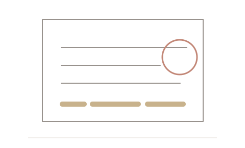
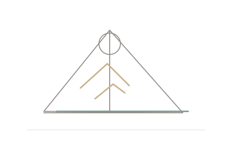
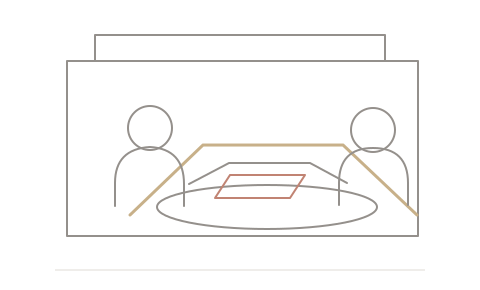

Design
Strategy, workplace planning and technical design.

BAMBU / CAPABILITIES AT A GLANCE
Office fit-outs, refurbishments, Cat A+ works and workplace design. One coordinated appointment, with scope and responsibilities agreed from the start.
WHAT WE DELIVER / FOUR WAYS TO START
Four client entry points, supported by six connected delivery disciplines.
Workplace strategy, test fits, concept design and coordinated technical information.

Explore workplace design CAPABILITY / 02Cat B fit-outs, upgrades and reconfigurations, including work within occupied buildings.

Explore fit-out delivery CAPABILITY / 03Cat A, Cat A+ and targeted refurbishment to prepare offices for the next letting.

Explore landlord works CAPABILITY / 04Furniture, finishes and joinery, coordinated with workplace technology.
SPECIALIST SUPPORT
Construction management, technology and aftercare are integrated into the agreed delivery scope.
OUR SERVICES / ONE APPOINTMENT
Agree the appointment, scope, cost reporting, programme and specialist responsibilities before work begins.
Strategy, workplace planning and technical design.
Fit-out, refurbishment and construction management.
Furniture, technology, handover and aftercare.